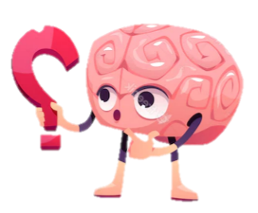

¿Sabías que...?
El contacto con un perro, con el cual se ha establecido un vínculo afectivo, hace que liberemos oxitocina, la hormona relacionada con el placer. También se reducen los niveles de cortisol en la sangre, cindicador fisiológico del estrés y aumentan el nivel de endorfinas, un péptido que funciona como un neurotransmisor y que son las responsables de la sensación de bienestar. Más allá de estos visibles beneficios, también el ritmo cardíaco se ve reducido y se fomenta la reducción de la presión arterial.
Artículos destacados

Diversión para perros
5 juegos para perros para entretenerlos en casa
Sabemos que jugar o salir con tu perro algunas veces puede resultar más complicado de lo esperado, pero no debes olvidar lo importante que es mantenerlo activo.

Caminata para perros
¿Cómo limpiar las patas de mi perro al regresar de la calle?
Algunas actividades son necesarias para mantener un estado óptimo de salud física y mental de tu perro y, aunque se puedan ver complicadas, éstas no deberían de detenerse.

Higiene para perros
Cepillado diario como rutina
No debemos olvidar que es importante que en casa haya una tarea de mantenimiento constante. Para ello, los cepillados diarios después del paseo se convierten en una tarea imprescindible, ya que quitan mucho polvo y suciedad.
Alimentación para perros
Respeta sus transiciones alimentarias
Si, por cualquier motivo, cambias un alimento por otro, es recomendable que lo hagas poco a poco y progresivamente. Dosifica ambos productos durante una semana y ve aumentando la dosis del nuevo alimento hasta cambiarlo por completo.